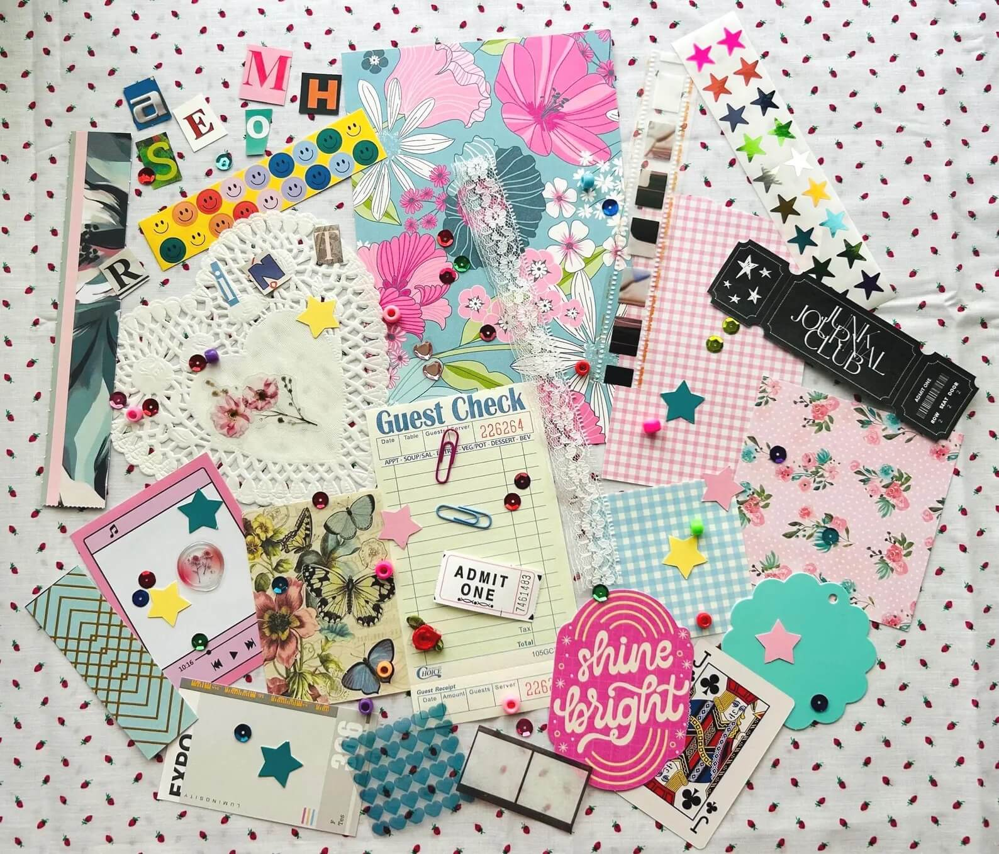
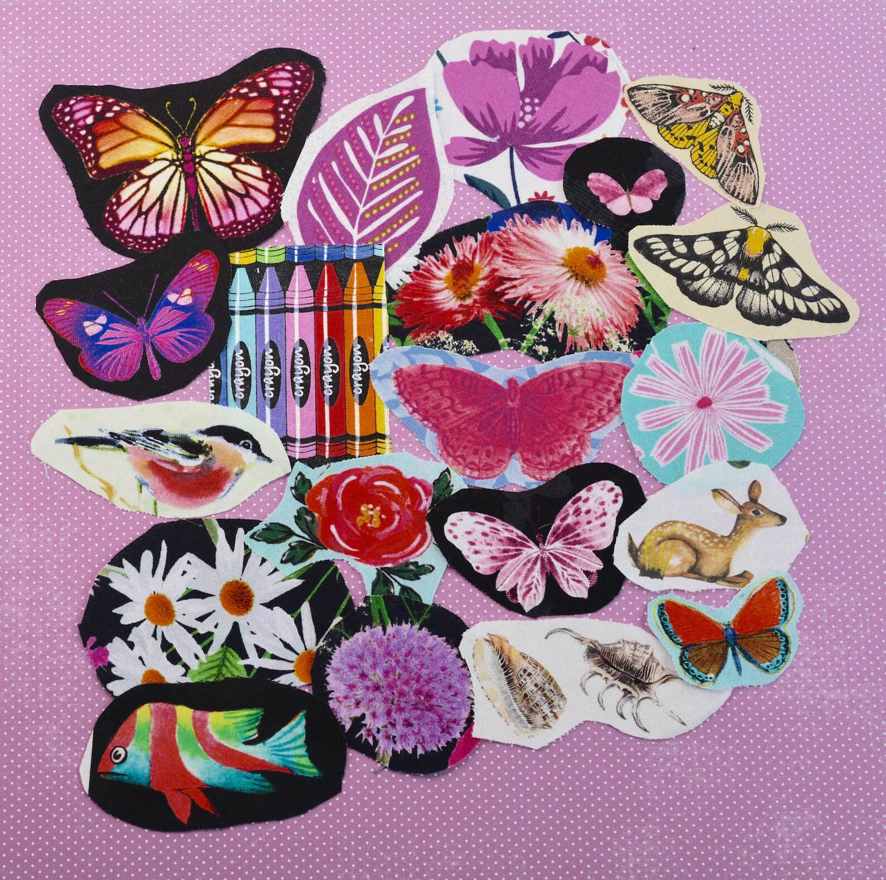
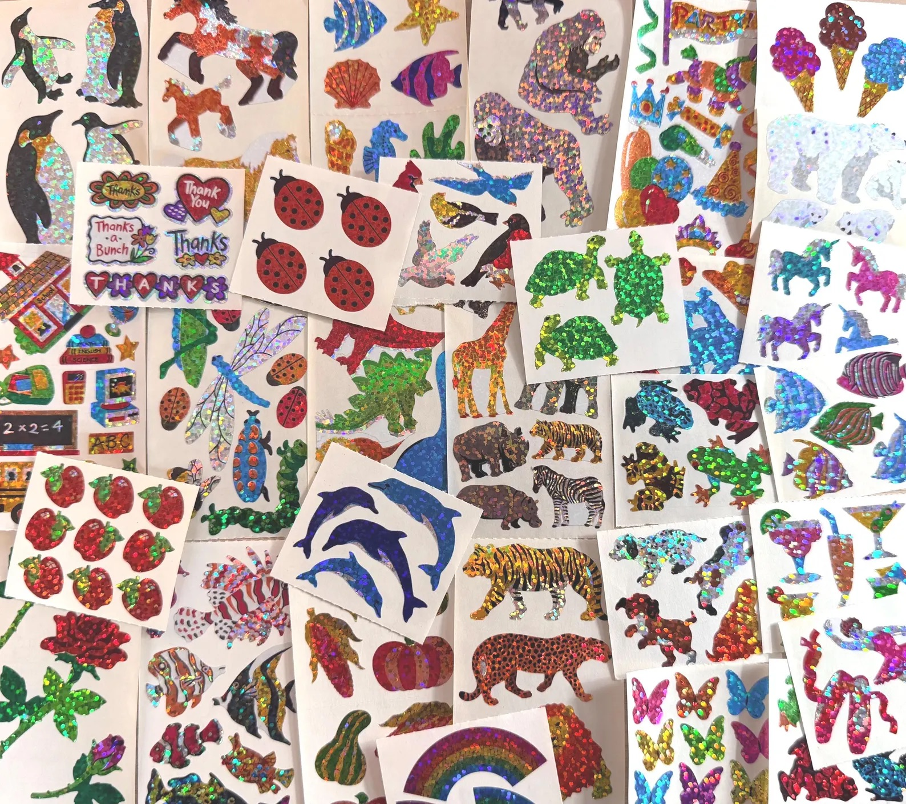

What Do You Need to Get Started?
To get started with junk journaling, you'll need a few basic supplies:
- A blank book or journal
- Scissors
- Glue or tape
- Found and recycled materials (junk!)
- Optional: pens, markers, paint, stamps, stickers, etc. for decorating
- Your imagination!

Evcelestials on Etsy
Ellen Morrow Arts on EtsyWhere to Find Materials?
You can find materials for your junk journal in many places:
- Old magazines, newspapers, and books
- Scrap paper and cardboard
- Fabric scraps and ribbons
- Buttons, beads, and other small trinkets
- Nature finds like leaves, flowers, and feathers
- Recycled packaging materials from snack foods
- Paper bags
- Tags or stickers from clothing or other items
- Ephemera such as ticket stubs, postcards, and stamps
- Many people buy junk journaling supplies from craft stores or online at Etsy, though it's not required to buy everything new
You may have more materials around your house than you think!
Tips for Getting Started
Here are some tips to help you get started with your junk journal:
- Start with a simple item or theme for a page spread (e.g. a napkin from a restaurant, a concert ticket, or even a favorite color)
- Experiment with different layouts and designs before pasting the items down
- Start with larger items and work your way down to smaller ones
- Use a variety of materials, textures, and layers for visual interest
- Don't worry about making it perfect - embrace the imperfections!
- Feel free to stop halfway through if something isn't working out and come back to it later
- You may want to use a softer cover journal as the journals can get quite bulky
- Some creators glue two pages together to help with the bulk and to help support the binding
For inspiration, check out our Gallery or visit our Video Guides page to see how others construct their junk journals.
Remember, there are no rules when it comes to junk journaling!

Stickering Around on Etsy